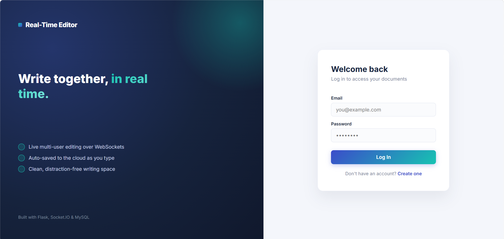

Featured · Real-time system
Real-Time Collaborative Editor
2026
A collaborative rich-text editor where multiple users can
work on the same document and see edits appear instantly.
Includes authentication, document management, rich-text
formatting, WebSocket-based synchronization, and automatic
MySQL persistence.
class="project-link project-live"
href="https://web-production-cf803.up.railway.app"
target="_blank"
rel="noopener"
>
Live Demo ↗
class="project-link project-github"
href="https://github.com/nashrahfatma/real-time-collaborative-editor"
target="_blank"
rel="noopener"
>
GitHub ↗